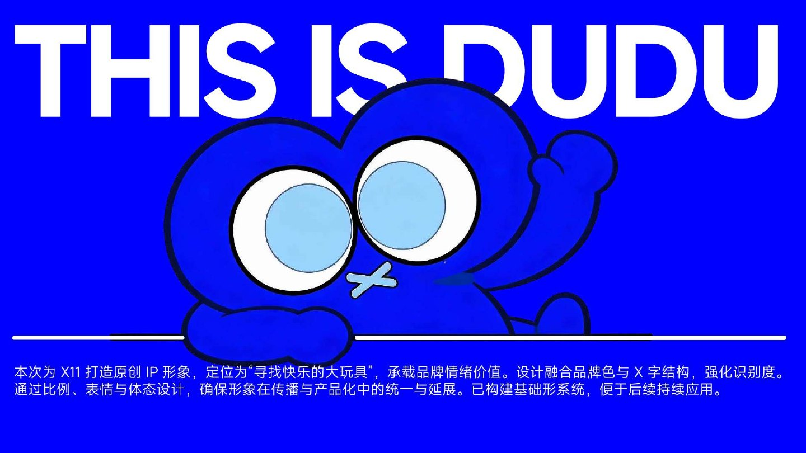
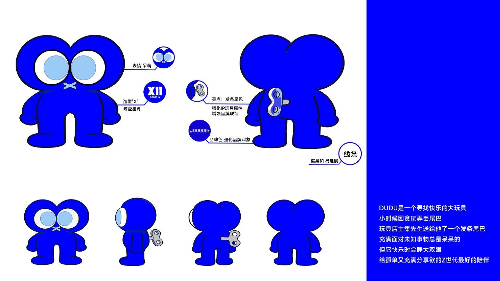
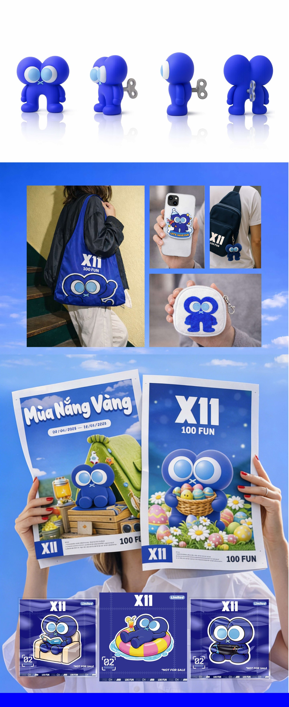

IP DESIGN / CHARACTER SYSTEM / 2025DUDU
DUDU
4X11
一个由“探索”长出来的蓝色角色：不只是单张形象，而是一套能进入包装、空间与日常物件的角色语言。



让角色拥有稳定的性格，也保留进入不同媒介时继续变化的空间。
一个由“探索”长出来的蓝色角色：不只是单张形象，而是一套能进入包装、空间与日常物件的角色语言。



让角色拥有稳定的性格，也保留进入不同媒介时继续变化的空间。